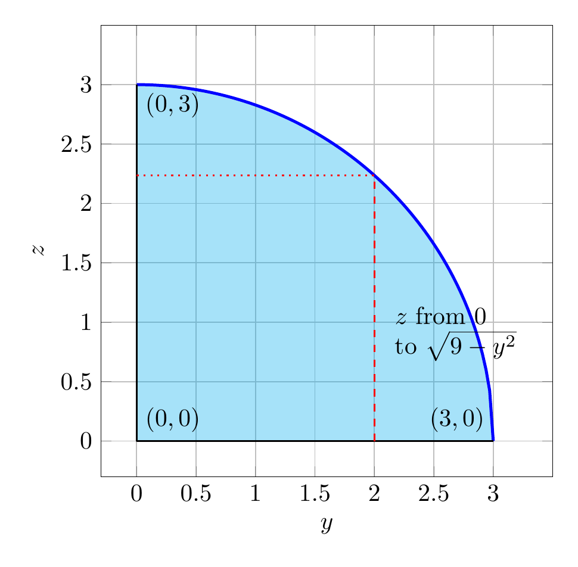

Please solve the problem in the following image.
(Image `20260928_144933_984902_utc_0800_0.png`. Alt text: Image: human_20260928_144933_984902_utc_0800)
20260928_144933_984902_utc_0800_0.png
End of problem
Answer
**Problem.** Evaluate
$$
\iiint_E z\,dV,
$$
where $E$ is bounded by the cylinder $y^2+z^2=9$ and the planes $x=0$, $y=3x$, and $z=0$ in the first octant.
**Step 1 — Understand the solid $E$.**
In the first octant, $x,y,z\ge 0$. The cylinder $y^2+z^2=9$ gives
$$
0\le y\le 3,\qquad 0\le z\le \sqrt{9-y^2}.
$$
The planes $x=0$ and $y=3x$ meet along the $z$-axis and form two wedges. The wedge that is bounded in the first octant by the cylinder is
$$
0\le x\le \frac{y}{3}.
$$
(If instead one took the wedge $y\le 3x$, the coordinate $x$ would be unbounded and the integral would diverge.) Thus
$$
E=\{(x,y,z):0\le y\le 3,\;0\le x\le y/3,\;0\le z\le \sqrt{9-y^2}\}.
$$
---
pgfplots_0.png
---
The 3‑D figure shows several cross-sections $D_x=\{(y,z):3x\le y\le 3,\;0\le z\le\sqrt{9-y^2}\}$ at $x=0,0.2,\dots,0.8$; the red slice corresponds to $x=0.5$. This illustrates how the solid is built by stacking these cross-sections.
---
\documentclass[border=10pt]{standalone}
\usepackage{pgfplots}
\pgfplotsset{compat=1.18}
\begin{document}
\begin{tikzpicture}
\begin{axis}[
axis lines=box,
xlabel=$y$, ylabel=$z$,
xmin=-0.3, xmax=3.5,
ymin=-0.3, ymax=3.5,
width=8cm, height=8cm,
grid=major,
enlargelimits=false,
xtick={0,0.5,1,1.5,2,2.5,3},
ytick={0,0.5,1,1.5,2,2.5,3},
]
% shaded quarter disk
\addplot[fill=cyan, opacity=0.35, draw=none, domain=0:3, samples=100]
{sqrt(9-x^2)} \closedcycle;
% circle arc
\addplot[blue, very thick, domain=0:3, samples=100] {sqrt(9-x^2)};
% axes
\addplot[black, thick] coordinates {(0,0) (3,0)};
\addplot[black, thick] coordinates {(0,0) (0,3)};
% typical strip at y = 2
\addplot[red, thick, dashed] coordinates {(2,0) (2,{sqrt(5)})};
\addplot[red, dotted, thick] coordinates {(0,{sqrt(5)}) (2,{sqrt(5)})};
\node[right, align=left] at (axis cs:2.10,0.9)
{$z$ from $0$\\ to $\sqrt{9-y^2}$};
% vertices
\node[above right] at (axis cs:0,0) {$(0,0)$};
\node[above left] at (axis cs:3,0) {$(3,0)$};
\node[below right] at (axis cs:0,3) {$(0,3)$};
\end{axis}
\end{tikzpicture}
\end{document}

pgfplots_2.png
---
For each fixed $y$, the $z$-limits come from the cylinder: $0\le z\le\sqrt{9-y^2}$.
---
**Step 2 — Set up and evaluate the iterated integral.**
Using the order $dz\,dx\,dy$,
$$
\begin{aligned}
I&=\int_{0}^{3}\int_{0}^{y/3}\int_{0}^{\sqrt{9-y^2}} z\,dz\,dx\,dy\\
&=\int_{0}^{3}\int_{0}^{y/3}\left[\frac{z^2}{2}\right]_{0}^{\sqrt{9-y^2}}dx\,dy\\
&=\int_{0}^{3}\int_{0}^{y/3}\frac{9-y^2}{2}\,dx\,dy\\
&=\int_{0}^{3}\frac{y}{3}\cdot\frac{9-y^2}{2}\,dy\\
&=\frac16\int_{0}^{3}(9y-y^3)\,dy\\
&=\frac16\left[\frac{9y^2}{2}-\frac{y^4}{4}\right]_{0}^{3}\\
&=\frac16\left(\frac{81}{2}-\frac{81}{4}\right)
=\frac16\cdot\frac{81}{4}
=\frac{81}{24}
=\frac{27}{8}.
\end{aligned}
$$
$$
\boxed{\frac{27}{8}}
$$